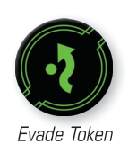

EVADE ()
Pilots can evade to fly defensively. When a ship performs an action, it gains one evade token. A ship is evading while it has at least one evade token. Evade tokes are circular, green tokens. While an evading ship defends, during the Modify Defense Dice step, it can spend one or more evade tokens to change that many of its blank or results to results.

- If an ability instructs a ship to gain an evade token, this is different than performing an action. A ship that gains the token without performing the action can still perform the action this round.